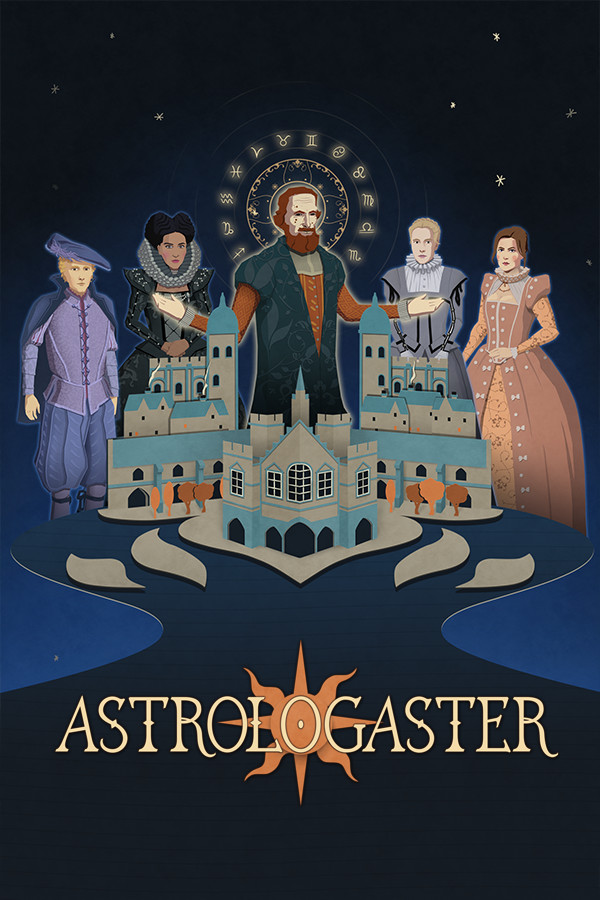

Astrologaster
Astrologaster
Details
|  | |
| Playtime | Not Played |
| Last Activity | Never |
| Added | 6/4/2022 10:59:59 |
| Modified | 6/14/2022 12:57:15 |
| Completion Status | Not Played |
| Library | Amazon Games |
| Source | Amazon |
| Platform | Amazon Games |
| Release Date | 5/9/2019 |
| Community Score | 88 |
| Critic Score | 74 |
| User Score | |
| Genre | Adventure Casual Indie |
| Developer | Nyamyam |
| Publisher | Nyamyam |
| Feature | Achievements Cloud Saves Single Player Trading Cards |
| Links | Community Hub Discussions Guides News Store Page PCGamingWiki Achievements |
| Tag | |
Description
The story
London, 1592. A great plague sweeps through the capital. When doctors flee the city in fear, a hero rises. His name is Simon Forman, “Doctor” of Astrology, Astronomy and Physick. Not only does he have the power to cure the sick, he can find their lost pets and predict their futures! All by reading the movements of the stars. But when the plague ends, Forman’s problems begin. The real doctors return to London and they will stop at nothing to bring him down...The game
Play as ‘Doctor’ Simon Forman - unlicensed medical professional and astrologer - and help him win a medical licence. Astrologaster is a narrative-based comedy game.Explore Forman’s life, his work, and his relationships with his clients. Make story choices by performing astrological readings. Choose strategically or make decisions just for fun - but be aware that your choices will have consequences (and unpredictable side effects!)
13 clients come to see you 5-7 times seeking advice for personal, professional and medical problems. By examining the stars in the sky, you diagnose and determine answers for your clients’ problems. As well as affecting the storyline, these choices will alter your clients’ satisfaction levels. Satisfied clients will write you letters of recommendation, and with enough of these letters you can obtain a medical licence from the University of Cambridge.
So-called “real” (licensed) doctors call Forman a quack and fraud. Help Forman prove these medical establishment elitists wrong!
Features
- Perform real* astrology: Examine the sky and choose astrological interpretations that Forman will use to advise his patients. (But remember: astrology is not an exact science!)
- Solve Hilarious Problems: Consult on problems ranging from Elizabethan terror plots and foul diseases, to romantic entanglements and stolen pies!
- Change Lives: Win your patients’ favour or ruin their lives. Advise 14 characters who return 5-7 times. Patients have their own ongoing stories which often overlap with each other. Use gossip from some characters to guide and manipulate others.
- Win A Medical Licence: Convince patients to write letters of recommendations. Collect enough letters to exchange them for a medical licence.
- Fully Voiced Character Dialogue: Sitcom-style comedy brought to life by a cast of over a dozen actors.
- Sing Along: Enjoy Renaissance-era music and sing along to each character’s theme song.
- Casebooks Come Alive: Simon Forman’s cases are presented as a beautiful pop-up book. Turn pages to delve deeper into your patients’ stories.
Summary
Astrologaster is a story-driven astrological comedy game set in Shakespeare’s London. Based on a true - and truly ridiculous - story.Simon Forman was considered a sage by some and a charlatan by others. What will your legacy be? Will you put your faith in the stars?